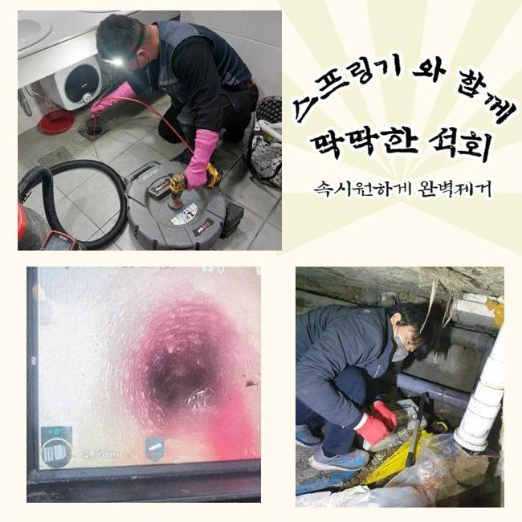
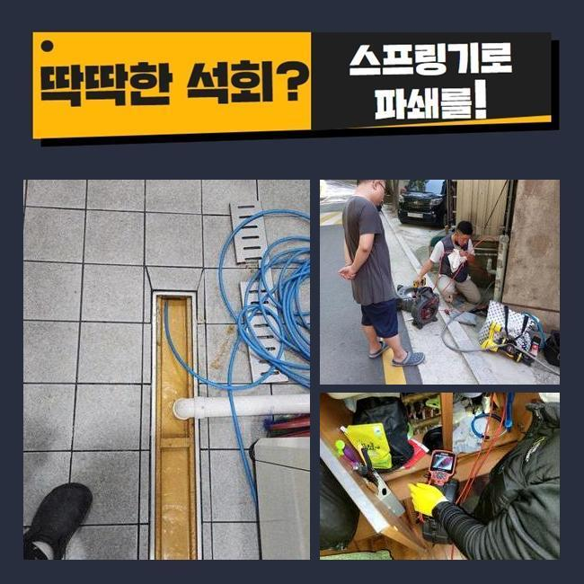
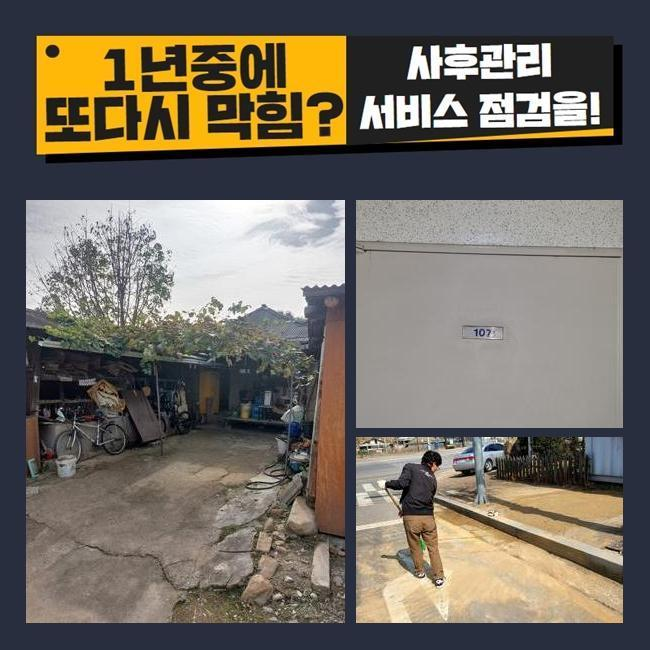
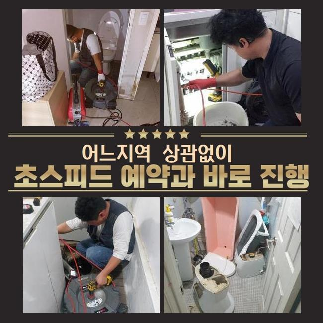
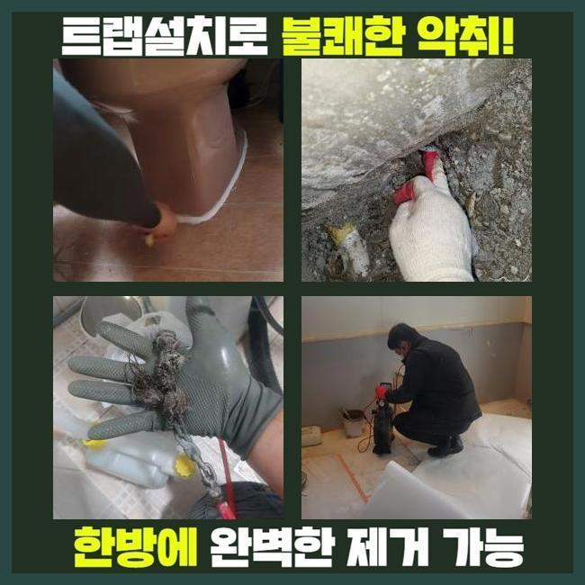
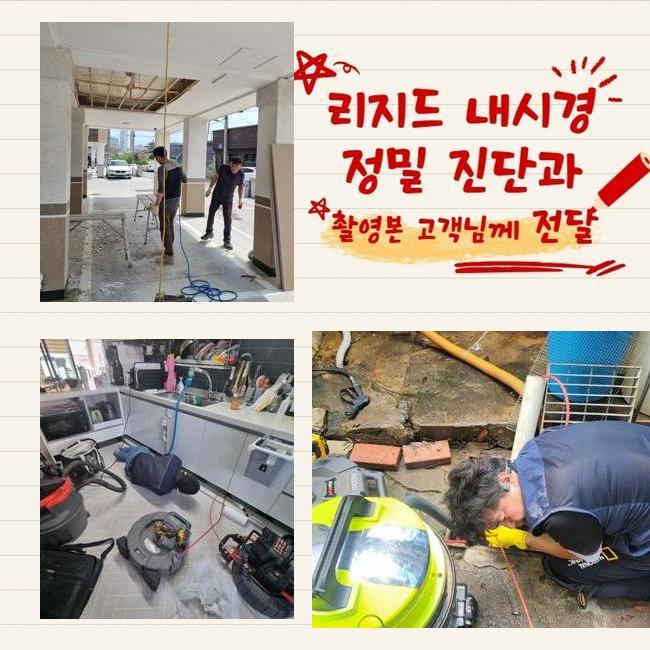
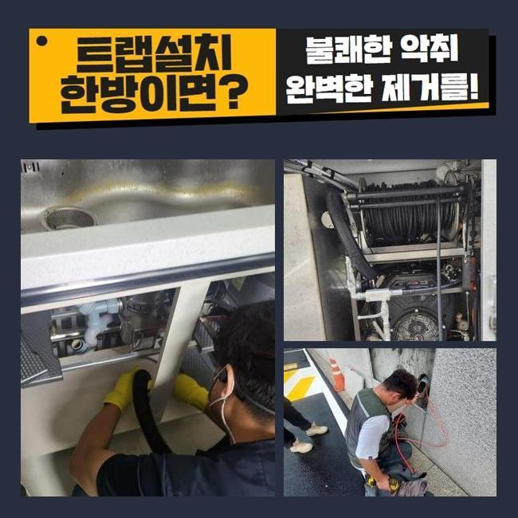

🏠 의정부 신곡동세탁기배수구막힘 자일동 배관내시경카메라 설비
용인 하수구막힘 전문 시공 후기

📋 작업 개요
- 위치: 용인
- 서비스 유형: 하수구막힘, 배관막힘, 누수수리, 뚫는업체, 배관청소, 배관보수
- 작업 일시: 2024. 12. 14. 10:00
- 업체명: 하수구수사대 (010-5615-2118)
🔍 문제 상황
의정부 신곡동세탁기배수구막힘 자일동 배관내시경카메라 설비
욕실 내의 하수구가 고장나버려서 하수가 경로로 싹 빠져나가지 않는 사건의 발생지로 향했습니다!
최적의 솔루션을 위하여 전화주신 곳으로 신속하게 이동하였습니다
빌라 아파트나 상업시설 무슨 조건이라도 단단히 준비하고 내방드려서 철두철미하게 보수를 신경써서 해드리고 있어요
방대한 크기의 건물 분포되어있는 배관 경로를 모두 검사하는 부분도 기본으로 완수할 수 있는 부분이에요
상부에 덮힌 필터를 없애고 내부구조를 확인했는데 밑에 엄청난 이물질들이 결합된 채로 머무르고 있었죠
하수 장애를 초래한 배경을 파악해야 작업이 편하므로 가져간 내시경 카메라를 켜서 실황을 중개해서 봤습니다
알게 모르게 유출된 모발이나 피부 껍질같은 이물이 켜켜이 쌓여가면서 막힘이 양산된 것이라 보였습니다
욕실 하수관이 문제가 생기면 심한 장애요소가 되어서 여려가지 불편함과 불쾌함을 야기시킬 수도 있고 오랫동안 나몰라라 한다면 내압을 견디지 못하고 터지는 등 더 처리하기 힘든 일로 전락할 수도 있습니다
보통 활용한 하수는 모두 하수구를 통하기에 항상 배수구의 원만한 작동이 유지되어야만 합니다
어떤 방식으로 문제의 하수구를 대해야 하는지 정보가 없다면 하수 설비 전문가를 탐색 하셔서 시공 받으셔야 합니다

🔎 원인 분석
💡 전문가 진단: 정밀 진단 장비를 사용하여 슬러지의 고착 여부를 판명하고 타격/세척 작업을 실시했습니다.
유연한 하수구 뚫음 작업을 위해 여러가지 특화된 장비군을 빠짐없이 챙기는 편입니다
현장 관찰 후 관로의 노폐물을 삭제하기 위하여 흡입하는 역할의 석션장비와 전동 막힘 제거기를 이용합니다
빠져나간 머리카락 뭉치를 없애주고 난 다음에는 남아있는 작은 조각과 달라붙은 슬러지를 없애려 스프링이나 샤프트 그리고 용해제를 붓기도 합니다
갖은 수단으로 배관을 말끔히 닦아내주면 악취와 막힘없이 하수관이 작동할 것입니다
배관용 내시경을 내려보내서 곰곰이 살펴보니까 석회덩어리와 모발이 함께 결합되어 있었습니다
혹시나 하는 마음에 카메라를 깊이 내려보낸 후 보니 똘똘 뭉친 이물질이 하나둘씩 드러났고 반복하다보니 어떤 영역에서 아마도 주범이 되었을만한 문제의 석회물질을 찾았습니다
꼼꼼하게 이물을 제거해서 봉인된 곳을 해제하여 막힘이 생기기 전처럼 운영되게끔 해주었습니다
욕실 내부에는 탁한 물이 구멍 속으로 빨려들어가지 못해서 발등까지 물이 고여있었고 습기가 훅 끼치는 형상을 하고 있었어요
물이 안내려가는 가벼운 사고도 위생 저해나 누수같은 골칫거리가 될 수 있으니 얼른 고쳐야 했습니다
플렉스 샤프트는 강한 쇠로 노커가 자리한 장비로 파이프를 따라 형성된 끈적한 슬러지 덩어리를 손쉽게 소멸되게 할만큼 강인합니다
해당 장비로 말하자면 강하게 돌아가기 때문에 파이프에 세게 닿지 않게 유의하는 게 좋습니다
세심한 조절 능력이 존재해야만 제어가 되니 전문지식이 결여된 사람들이 제어하기가 쉽지 않습니다

🔧 작업 과정
장비의 힘을 과신하여 허술하게 작업하시다가 파이프에 무리한 힘을 가하다가는 배관에 천공이 생길 수 있으니 노하우와 장비 보유력을 물어보고 결정을 내려야 합니다
클리너를 하수구 안으로 조금씩 흘려보내주고 반응이 있도록 기다려주고 물방울이 올라오는 걸 철저히 확인하고 다음으로 넘어갔어요
말랑해진 이물질을 공격하고자 동일한 작업을 거듭하며 견고화된 석회가 해소되도록 작업을 해줬습니다
간혹 석회의 일부가 외부로 방출되어져 나오는 케이스도 때때로 목격되는데 내측에 석회가 돌덩이처럼 충만하게 머무르고 있따면 진동작용으로 인한 반응이니 자연스러운 현상입니다
샤프트를 열심히 회전시킨 다음에는 흡입기인 석션을 다시 써서 찌꺼기가 녹아난 잔수를 빨아당겨 깨끗한 환경을 만듭니다
이러한 종합적인 단계로 혼탁한 하수와 불순물이 한방에 자취를 감추게 되었고 작업을 위한 주변정리 과정이 끝났습니다
배수구 그레이팅을 없애고 진입부가 어떤지 확인했어요
분해된 이물질 성분이 압박받아 솟아오르지 못하게 이 부분도 신경써가면서 내시경 기계로 배수구 속을 자세히 보실 수 있게끔 정보를 안내해 드렸습니다
내시경을 동원해 본다면 생중계되는 스크린을 보면서 파쇄 업무를 수행할 수 있어요
이 장비를 빠트린다면 막힌 대상물에 대한 이해도도 떨어지고 갑작스레 올라오는 변수에 유연한 사고로 접근하기 힘들어요
비록 단순한 막힘 현장이라도 카메라를 신속히 적용할 수 있는 자세가 되어있어야 합니다
저희는 항상 내시경을 통해 시공을 일임하고 있으며 이로 인해 얻은 정보로 막힌 쪽들을 다 추스려 나갑니다
내시경을 병용하여 뚫음을 행하게 되면 면밀하고 조속하게 불편한 상태를 해결하니 만족도도 높습니다
가자마자 내시경을 세팅해서 선두로 활용을 해서 포문을 여는데 이번 장소는 이리저리 둘러보니 꽉 막혔다는 증거가 많아서 입구부터 통수부터 내주고 작업 후에 시공이 잘 됐는지 확인하고자 적용을 한 사례입니다
내시경은 워낙 작기도 하고 단단한 노즐에 달린 카메라인데 꼬여있고 복잡다단한 구조의 배관을 샅샅이 조사할 수 있도록 해줍니다
오늘의 모든 절차들을 끝내고 최종 확인 절차로 정비 완료된 배관에 내시경을 더 아래부근까지 내려보니 아니나다를까 부착된 기름진 오염물질들을 또다시 찾아냈습니다
화면을 보면서 청소가 되어가는 모습을 즉시 파악하며 잔량이 없도록 석션기로 깔끔하게 삭제시켜주었습니다
추가적인 분해가 요구되지 않는 상황이라 판단되면 샤프트의 가동을 중단하고 작은 사이즈가 된 이물질들을 석션기기 안으로 집합시킴으로써 작업을 완수할 수 있었습니다
냄새는 괜찮은지 보려고 트랩 부근을 살펴봤습니다


✅ 작업 완료
트랩의 안쪽 부분에도 찌꺼기들이 덕지덕지 붙어서 배출을 방해하는 상황으로 보였습니다
신규 트랩으로 장착해 드린 후 기능도 확인해본 다음에 끝났다고 말씀을 드렸어요
사전 검사와 능숙한 스킬로 화장실 수압 저하 문제가 기분 좋은 결말을 맞이했고 향후 누수되거나 악취가 풍겨져 나와서 생기는 문제로 인한 힘듦이 없을 겁니다
고객님이 겪으시는 배수구 곤란 상황을 센스있게 해소해 드린다고 약속드립니다
하수구에 대한 여러 이슈가 고객님 댁으로 발현된다면 저희측에 연락하셔서 상황을 솔직히 말씀해 주세요!




⚠️ 베란다 누수 및 방수 관리 방법
- ✅ 비가 많이 올 때 창틀 주변이나 아래층 천장에 얼룩이 생기는지 정기적으로 확인해 보세요.
- ✅ 우수관 주변 실리콘 마감이 들뜨거나 깨진 틈새가 있는지 손상 여부를 수시로 체크하세요.
- ✅ 베란다 바닥 타일의 줄눈(메지)이 소실되면 그 틈으로 물이 침투하여 누수가 유발됩니다.
- ✅ 누수 의심 증상 발견 시 방치하면 아래층 손실이 커지므로 즉시 전문가의 진단을 받으십시오.
💡 핵심 정리
- 확실한 장비 작업(내시경 점검 및 샤프트 스케일링)으로 원인을 뿌리 뽑습니다.
- 작업 후 1년 이내에 동일한 부위 재발 시 100% 무상 A/S 서비스를 보장합니다.
- 서울 · 경기 · 인천 전 지역에 24시간 언제든 긴급 출동할 수 있도록 항시 대기 중입니다.
❓ 자주 묻는 질문 (FAQ)
🚨 용인 하수구막힘 문제로 고민이신가요?
정확한 원인 진단과 확실한 시공으로 재발 없는 해결을 약속드립니다.
24시간 긴급 출동 | 서울 · 경기 · 인천 전지역 | 1년 내 재발 시 무상 A/S